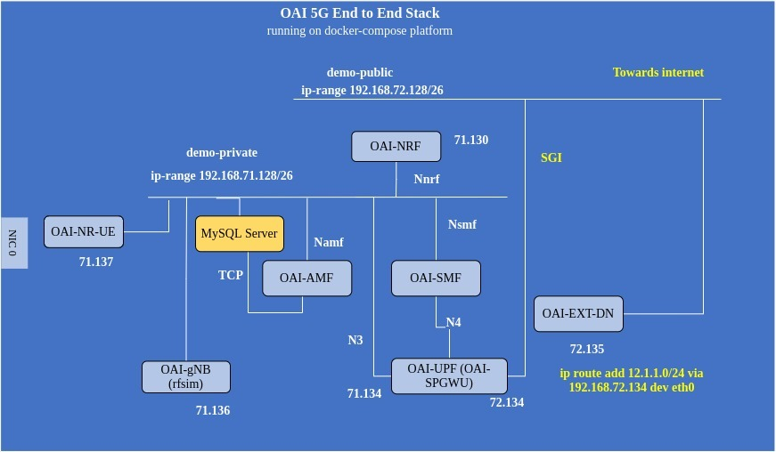

OAI Full Stack 5G-NR RF simulation with containers
1. Retrieving the images on Docker-Hub¶
Currently the images are hosted under the team account oaisoftwarealliance. They were previously hosted under the user account rdefosseoai.
Once again you may need to log on docker-hub if your organization has reached pulling limit as anonymous.
$ docker login
Login with your Docker ID to push and pull images from Docker Hub. If you don't have a Docker ID, head over to https://hub.docker.com to create one.
Username:
Password:
Now pull images.
$ docker pull mysql:9.6
$ docker pull oaisoftwarealliance/oai-amf:v2.2.2
$ docker pull oaisoftwarealliance/oai-smf:v2.2.2
$ docker pull oaisoftwarealliance/oai-upf:v2.2.2
$ docker pull oaisoftwarealliance/trf-gen-cn5g:latest
$ docker pull oaisoftwarealliance/oai-gnb:develop
$ docker pull oaisoftwarealliance/oai-nr-ue:develop
$ docker logout
CAUTION: 2023/01/27 with the release v1.5.0 of the CN5G, the previous version was not compatible any-more.
This new version is working only with v2.1.9 or later of the CN5G.
2. Deploy containers¶

CAUTION: this SHALL be done in multiple steps.
Just docker-compose up -d WILL NOT WORK!
All the following commands SHALL be run from the ci-scripts/yaml_files/5g_rfsimulator folder for a deployment with monolithic gNB.
For a deployment with the gNB split in CU and DU components, please refer to the ../5g_f1_rfsimulator folder.
For a deployment with the gNB split in CU-CP, CU-UP, and DU components, please refer to the ../5g_rfsimulator_e1 folder.
Note: These instructions require docker compose v2.36.0 or later due to the
use of the interface_name property, which is necessary for ensuring consistent
IP address assignment to the container interface.
If you're using an older version of docker compose, you may encounter the following
error:
validating docker-compose.yaml: services.oai-upf.networks.public_net Additional property interface_name is not allowed
2.1. Deploy OAI 5G Core Network¶
$ cd ci-scripts/yaml_files/5g_rfsimulator
$ docker-compose up -d mysql oai-amf oai-smf oai-upf oai-ext-dn
Creating network "rfsim5g-oai-public-net" with driver "bridge"
Creating network "rfsim5g-oai-traffic_net-net" with driver "bridge"
Creating rfsim5g-mysql ... done
Creating rfsim5g-oai-upf ... done
Creating rfsim5g-oai-amf ... done
Creating rfsim5g-oai-smf ... done
Creating rfsim5g-oai-ext-dn ... done
Wait for a bit.
$ docker-compose ps -a
Name Command State Ports
-------------------------------------------------------------------------------------------------
rfsim5g-mysql docker-entrypoint.sh mysqld Up (healthy) 3306/tcp, 33060/tcp
rfsim5g-oai-amf /bin/bash /openair-amf/bin ... Up (healthy) 38412/sctp, 80/tcp, 9090/tcp
rfsim5g-oai-ext-dn /bin/bash -c apt update; ... Up (healthy)
rfsim5g-oai-smf /bin/bash -c /openair-smf/ ... Up (healthy) 80/tcp, 8805/udp, 9090/tcp
rfsim5g-oai-upf /bin/bash -c /openair-upf/ ... Up (healthy) 2152/udp, 8805/udp
At this point, you can prepare a capture on the newly-created public docker bridges:
$ ifconfig
...
rfsim5g-public: flags=4163<UP,BROADCAST,RUNNING,MULTICAST> mtu 1500
inet 192.168.71.129 netmask 255.255.255.192 broadcast 192.168.71.191
inet6 fe80::42:c4ff:fe2b:3d38 prefixlen 64 scopeid 0x20<link>
ether 02:42:c4:2b:3d:38 txqueuelen 0 (Ethernet)
RX packets 4 bytes 112 (112.0 B)
RX errors 0 dropped 0 overruns 0 frame 0
TX packets 7 bytes 626 (626.0 B)
TX errors 0 dropped 0 overruns 0 carrier 0 collisions 0
rfsim5g-traffic: flags=4163<UP,BROADCAST,RUNNING,MULTICAST> mtu 1500
inet 192.168.72.129 netmask 255.255.255.192 broadcast 192.168.72.191
inet6 fe80::42:b5ff:fed3:e732 prefixlen 64 scopeid 0x20<link>
ether 02:42:b5:d3:e7:32 txqueuelen 0 (Ethernet)
RX packets 2652 bytes 142335 (142.3 KB)
RX errors 0 dropped 0 overruns 0 frame 0
TX packets 3999 bytes 23367972 (23.3 MB)
TX errors 0 dropped 0 overruns 0 carrier 0 collisions 0
...
2.2. Deploy OAI gNB in RF simulator mode and in Standalone Mode¶
CAUTION: To execute this 2nd step, the whole CN5G SHALL be in healthy state (especially the mysql container).
The gNB can be deployed either in monolithic mode, or in CU/DU split mode. - For a deployment with a monolithic gNB:
$ docker-compose up -d oai-gnb
rfsim5g-oai-upf is up-to-date
rfsim5g-oai-ext-dn is up-to-date
Creating rfsim5g-oai-gnb ... done
#Deployment of the CU
$ docker-compose up -d oai-cu
#Deployment of the DU
$ docker-compose up -d oai-du
$ docker-compose ps -a
Name Command State Ports
-------------------------------------------------------------------------------------------------
rfsim5g-mysql docker-entrypoint.sh mysqld Up (healthy) 3306/tcp, 33060/tcp
rfsim5g-oai-amf /bin/bash /openair-amf/bin ... Up (healthy) 38412/sctp, 80/tcp, 9090/tcp
rfsim5g-oai-ext-dn /bin/bash -c apt update; ... Up (healthy)
rfsim5g-oai-gnb /opt/oai-gnb/bin/entrypoin ... Up (healthy)
rfsim5g-oai-smf /bin/bash -c /openair-smf/ ... Up (healthy) 80/tcp, 8805/udp, 9090/tcp
rfsim5g-oai-upf /bin/bash -c /openair-upf/ ... Up (healthy) 2152/udp, 8805/udp
You can verify that the gNB is connected with the AMF:
$ docker logs rfsim5g-oai-amf
...
[AMF] [amf_app] [info ] |----------------------------------------------------gNBs' information-------------------------------------------|
[AMF] [amf_app] [info ] | Index | Status | Global ID | gNB Name | PLMN |
[AMF] [amf_app] [info ] | 1 | Connected | 0x0 | gnb-rfsim | 208, 99 |
[AMF] [amf_app] [info ] |----------------------------------------------------------------------------------------------------------------|
...
2.3. Deploy OAI NR-UE in RF simulator mode and in Standalone Mode¶
$ docker-compose up -d oai-nr-ue
rfsim5g-mysql is up-to-date
rfsim5g-oai-amf is up-to-date
rfsim5g-oai-smf is up-to-date
rfsim5g-oai-upf is up-to-date
rfsim5g-oai-ext-dn is up-to-date
rfsim5g-oai-gnb is up-to-date
Creating rfsim5g-oai-nr-ue ... done
Wait for a bit.
$ docker-compose ps -a
Name Command State Ports
-------------------------------------------------------------------------------------------------
rfsim5g-mysql docker-entrypoint.sh mysqld Up (healthy) 3306/tcp, 33060/tcp
rfsim5g-oai-amf /bin/bash /openair-amf/bin ... Up (healthy) 38412/sctp, 80/tcp, 9090/tcp
rfsim5g-oai-ext-dn /bin/bash -c apt update; ... Up (healthy)
rfsim5g-oai-gnb /opt/oai-gnb/bin/entrypoin ... Up (healthy)
rfsim5g-oai-nr-ue /opt/oai-nr-ue/bin/entrypo ... Up (healthy)
rfsim5g-oai-smf /bin/bash -c /openair-smf/ ... Up (healthy) 80/tcp, 8805/udp, 9090/tcp
rfsim5g-oai-upf /bin/bash -c /openair-upf/ ... Up (healthy) 2152/udp, 8805/udp
Making sure the OAI UE is connected:
$ docker exec -it rfsim5g-oai-nr-ue /bin/bash
root@bb4d400a832d:/opt/oai-nr-ue# ifconfig
eth0: flags=4163<UP,BROADCAST,RUNNING,MULTICAST> mtu 1500
inet 192.168.71.150 netmask 255.255.255.192 broadcast 192.168.71.191
ether 02:42:c0:a8:47:89 txqueuelen 0 (Ethernet)
RX packets 224259 bytes 5821372018 (5.8 GB)
RX errors 0 dropped 0 overruns 0 frame 0
TX packets 235916 bytes 7848786376 (7.8 GB)
TX errors 0 dropped 0 overruns 0 carrier 0 collisions 0
lo: flags=73<UP,LOOPBACK,RUNNING> mtu 65536
inet 127.0.0.1 netmask 255.0.0.0
loop txqueuelen 1000 (Local Loopback)
RX packets 0 bytes 0 (0.0 B)
RX errors 0 dropped 0 overruns 0 frame 0
TX packets 0 bytes 0 (0.0 B)
TX errors 0 dropped 0 overruns 0 carrier 0 collisions 0
oaitun_ue1: flags=4305<UP,POINTOPOINT,RUNNING,NOARP,MULTICAST> mtu 1500
inet 12.1.1.2 netmask 255.255.255.0 destination 12.1.1.2
unspec 00-00-00-00-00-00-00-00-00-00-00-00-00-00-00-00 txqueuelen 500 (UNSPEC)
RX packets 0 bytes 0 (0.0 B)
RX errors 0 dropped 0 overruns 0 frame 0
TX packets 0 bytes 0 (0.0 B)
TX errors 0 dropped 0 overruns 0 carrier 0 collisions 0
2.4. Deploy Second OAI NR-UE in RF simulator mode and in Standalone Mode¶
Create a entry for new IMSI (208990100001101) in oai_db.sql file. For this, refer to section Making the NR-UE connect to the core network
Create the entry for the second UE in docker-compose.yaml file as follows:
oai-nr-ue2:
image: oai-nr-ue:develop
container_name: rfsim5g-oai-nr-ue2
cap_drop:
- ALL
cap_add:
- NET_ADMIN # for interface bringup
- NET_RAW # for ping
environment:
USE_ADDITIONAL_OPTIONS: -E --rfsim -r 106 --numerology 1 -C 3619200000 --rfsimulator.[0].serveraddr 192.168.71.140 --log_config.global_log_options level,nocolor,time
depends_on:
- oai-gnb
devices:
- /dev/net/tun:/dev/net/tun
volumes:
- ../../conf_files/nrue.uicc.conf:/opt/oai-nr-ue/etc/nr-ue.conf
networks:
public_net:
ipv4_address: 192.168.71.151
healthcheck:
test: /bin/bash -c "pgrep nr-uesoftmodem"
interval: 10s
timeout: 5s
retries: 5
$ docker-compose up -d oai-nr-ue2
rfsim5g-mysql is up-to-date
rfsim5g-oai-amf is up-to-date
rfsim5g-oai-smf is up-to-date
rfsim5g-oai-upf is up-to-date
rfsim5g-oai-ext-dn is up-to-date
rfsim5g-oai-gnb is up-to-date
Creating rfsim5g-oai-nr-ue2 ... done
Wait for a bit.
$ docker-compose ps -a
Name Command State Ports
-------------------------------------------------------------------------------------------------
rfsim5g-mysql docker-entrypoint.sh mysqld Up (healthy) 3306/tcp, 33060/tcp
rfsim5g-oai-amf /bin/bash /openair-amf/bin ... Up (healthy) 38412/sctp, 80/tcp, 9090/tcp
rfsim5g-oai-ext-dn /bin/bash -c apt update; ... Up (healthy)
rfsim5g-oai-gnb /opt/oai-gnb/bin/entrypoin ... Up (healthy)
rfsim5g-oai-nr-ue /opt/oai-nr-ue/bin/entrypo ... Up (healthy)
rfsim5g-oai-nr-ue2 /opt/oai-nr-ue/bin/entrypo ... Up (healthy)
rfsim5g-oai-smf /bin/bash /openair-smf/bin ... Up (healthy) 80/tcp, 8805/udp, 9090/tcp
rfsim5g-oai-upf /bin/bash /openair-upf/bin ... Up (healthy) 2152/udp, 8805/udp
Making sure the Second OAI UE is connected:
$ docker exec -it rfsim5g-oai-nr-ue2 /bin/bash
root@bb4d400a832d:/opt/oai-nr-ue# ifconfig
eth0: flags=4163<UP,BROADCAST,RUNNING,MULTICAST> mtu 1500
inet 192.168.71.151 netmask 255.255.255.192 broadcast 192.168.71.191
ether 02:42:c0:a8:47:8a txqueuelen 0 (Ethernet)
RX packets 3192021 bytes 67784900946 (67.7 GB)
RX errors 0 dropped 0 overruns 0 frame 0
TX packets 3397743 bytes 91320004542 (91.3 GB)
TX errors 0 dropped 0 overruns 0 carrier 0 collisions 0
lo: flags=73<UP,LOOPBACK,RUNNING> mtu 65536
inet 127.0.0.1 netmask 255.0.0.0
loop txqueuelen 1000 (Local Loopback)
RX packets 0 bytes 0 (0.0 B)
RX errors 0 dropped 0 overruns 0 frame 0
TX packets 0 bytes 0 (0.0 B)
TX errors 0 dropped 0 overruns 0 carrier 0 collisions 0
oaitun_ue1: flags=4305<UP,POINTOPOINT,RUNNING,NOARP,MULTICAST> mtu 1500
inet 12.1.1.3 netmask 255.255.255.0 destination 12.1.1.3
unspec 00-00-00-00-00-00-00-00-00-00-00-00-00-00-00-00 txqueuelen 500 (UNSPEC)
RX packets 0 bytes 0 (0.0 B)
RX errors 0 dropped 0 overruns 0 frame 0
TX packets 0 bytes 0 (0.0 B)
TX errors 0 dropped 0 overruns 0 carrier 0 collisions 0
3. Check traffic¶
3.1. Check your Internet connectivity¶
$ docker exec -it rfsim5g-oai-nr-ue /bin/bash
root@bb4d400a832d:/opt/oai-nr-ue# ping -I oaitun_ue1 -c 10 www.lemonde.fr
PING s2.shared.global.fastly.net (151.101.122.217) from 12.1.1.2 oaitun_ue1: 56(84) bytes of data.
64 bytes from 151.101.122.217 (151.101.122.217): icmp_seq=1 ttl=53 time=64.5 ms
64 bytes from 151.101.122.217 (151.101.122.217): icmp_seq=2 ttl=53 time=37.0 ms
64 bytes from 151.101.122.217 (151.101.122.217): icmp_seq=3 ttl=53 time=43.2 ms
64 bytes from 151.101.122.217 (151.101.122.217): icmp_seq=4 ttl=53 time=43.2 ms
64 bytes from 151.101.122.217 (151.101.122.217): icmp_seq=5 ttl=53 time=54.3 ms
64 bytes from 151.101.122.217 (151.101.122.217): icmp_seq=6 ttl=53 time=24.0 ms
64 bytes from 151.101.122.217 (151.101.122.217): icmp_seq=7 ttl=53 time=32.5 ms
64 bytes from 151.101.122.217 (151.101.122.217): icmp_seq=8 ttl=53 time=37.0 ms
64 bytes from 151.101.122.217 (151.101.122.217): icmp_seq=9 ttl=53 time=41.2 ms
64 bytes from 151.101.122.217 (151.101.122.217): icmp_seq=10 ttl=53 time=50.3 ms
--- s2.shared.global.fastly.net ping statistics ---
10 packets transmitted, 10 received, 0% packet loss, time 9011ms
rtt min/avg/max/mdev = 24.035/42.765/64.557/10.904 ms
If it does not work, certainly you need to modify the DNS values in the docker-compose.
But you can also check with the ext-dn container (IP address is 192.168.72.135 in docker-compose)
$ docker exec -it rfsim5g-oai-nr-ue /bin/bash
root@bb4d400a832d# ping -I oaitun_ue1 -c 2 192.168.72.135
PING 192.168.72.135 (192.168.72.135) from 12.1.1.2 oaitun_ue1: 56(84) bytes of data.
64 bytes from 192.168.72.135: icmp_seq=1 ttl=63 time=10.9 ms
64 bytes from 192.168.72.135: icmp_seq=2 ttl=63 time=16.5 ms
--- 192.168.72.135 ping statistics ---
2 packets transmitted, 2 received, 0% packet loss, time 1001ms
rtt min/avg/max/mdev = 10.939/13.747/16.556/2.810 ms
Let now try to check UDP traffic in Downlink.
You will need 2 terminals: one in the NR-UE container, one in the ext-dn container.
Note: Similarly, Second OAI UE Internet connectivity can be checked.
3.2. Start the iperf server inside the NR-UE container¶
$ docker exec -it rfsim5g-oai-nr-ue /bin/bash
root@bb4d400a832d:/opt/oai-nr-ue# iperf -B 12.1.1.2 -u -i 1 -s
------------------------------------------------------------
Server listening on UDP port 5001
Binding to local address 12.1.1.2
Receiving 1470 byte datagrams
UDP buffer size: 208 KByte (default)
------------------------------------------------------------
3.3. Start the iperf client inside the ext-dn container¶
$ docker exec -it rfsim5g-oai-ext-dn /bin/bash
root@f239e31a0bd0:/# iperf -c 12.1.1.2 -u -i 1 -t 20 -b 500K
------------------------------------------------------------
Client connecting to 12.1.1.2, UDP port 5001
Sending 1470 byte datagrams, IPG target: 22968.75 us (kalman adjust)
UDP buffer size: 208 KByte (default)
------------------------------------------------------------
[ 3] local 192.168.72.135 port 58800 connected with 12.1.1.2 port 5001
[ ID] Interval Transfer Bandwidth
[ 3] 0.0- 1.0 sec 64.6 KBytes 529 Kbits/sec
[ 3] 1.0- 2.0 sec 63.2 KBytes 517 Kbits/sec
[ 3] 2.0- 3.0 sec 61.7 KBytes 506 Kbits/sec
[ 3] 3.0- 4.0 sec 63.2 KBytes 517 Kbits/sec
[ 3] 4.0- 5.0 sec 61.7 KBytes 506 Kbits/sec
[ 3] 5.0- 6.0 sec 63.2 KBytes 517 Kbits/sec
[ 3] 6.0- 7.0 sec 61.7 KBytes 506 Kbits/sec
[ 3] 7.0- 8.0 sec 63.2 KBytes 517 Kbits/sec
[ 3] 8.0- 9.0 sec 61.7 KBytes 506 Kbits/sec
[ 3] 9.0-10.0 sec 63.2 KBytes 517 Kbits/sec
[ 3] 10.0-11.0 sec 61.7 KBytes 506 Kbits/sec
[ 3] 11.0-12.0 sec 63.2 KBytes 517 Kbits/sec
[ 3] 12.0-13.0 sec 61.7 KBytes 506 Kbits/sec
[ 3] 13.0-14.0 sec 63.2 KBytes 517 Kbits/sec
[ 3] 14.0-15.0 sec 63.2 KBytes 517 Kbits/sec
[ 3] 15.0-16.0 sec 61.7 KBytes 506 Kbits/sec
[ 3] 16.0-17.0 sec 63.2 KBytes 517 Kbits/sec
[ 3] 17.0-18.0 sec 61.7 KBytes 506 Kbits/sec
[ 3] 18.0-19.0 sec 63.2 KBytes 517 Kbits/sec
[ 3] 19.0-20.0 sec 61.7 KBytes 506 Kbits/sec
[ 3] 0.0-20.0 sec 1.22 MBytes 512 Kbits/sec
[ 3] Sent 872 datagrams
[ 3] Server Report:
[ 3] 0.0-20.0 sec 1.22 MBytes 510 Kbits/sec 0.000 ms 3/ 872 (0%)
Back on your NR-UE terminal you shall see:
[ 3] local 12.1.1.2 port 5001 connected with 192.168.72.135 port 58800
[ ID] Interval Transfer Bandwidth Jitter Lost/Total Datagrams
[ 3] 0.0- 1.0 sec 63.2 KBytes 517 Kbits/sec 1.113 ms 0/ 44 (0%)
[ 3] 1.0- 2.0 sec 61.7 KBytes 506 Kbits/sec 1.466 ms 0/ 43 (0%)
[ 3] 2.0- 3.0 sec 63.2 KBytes 517 Kbits/sec 1.770 ms 0/ 44 (0%)
[ 3] 3.0- 4.0 sec 61.7 KBytes 506 Kbits/sec 1.378 ms 0/ 43 (0%)
[ 3] 4.0- 5.0 sec 63.2 KBytes 517 Kbits/sec 1.614 ms 0/ 44 (0%)
[ 3] 5.0- 6.0 sec 63.2 KBytes 517 Kbits/sec 1.427 ms 0/ 44 (0%)
[ 3] 6.0- 7.0 sec 60.3 KBytes 494 Kbits/sec 1.507 ms 1/ 43 (2.3%)
[ 3] 7.0- 8.0 sec 63.2 KBytes 517 Kbits/sec 1.409 ms 0/ 44 (0%)
[ 3] 8.0- 9.0 sec 61.7 KBytes 506 Kbits/sec 1.525 ms 0/ 43 (0%)
[ 3] 9.0-10.0 sec 63.2 KBytes 517 Kbits/sec 1.393 ms 0/ 44 (0%)
[ 3] 10.0-11.0 sec 61.7 KBytes 506 Kbits/sec 1.377 ms 0/ 43 (0%)
[ 3] 11.0-12.0 sec 63.2 KBytes 517 Kbits/sec 1.501 ms 0/ 44 (0%)
[ 3] 12.0-13.0 sec 61.7 KBytes 506 Kbits/sec 1.788 ms 0/ 43 (0%)
[ 3] 13.0-14.0 sec 63.2 KBytes 517 Kbits/sec 1.466 ms 0/ 44 (0%)
[ 3] 14.0-15.0 sec 61.7 KBytes 506 Kbits/sec 1.381 ms 0/ 43 (0%)
[ 3] 15.0-16.0 sec 61.7 KBytes 506 Kbits/sec 1.417 ms 1/ 44 (2.3%)
[ 3] 16.0-17.0 sec 61.7 KBytes 506 Kbits/sec 1.569 ms 0/ 43 (0%)
[ 3] 17.0-18.0 sec 63.2 KBytes 517 Kbits/sec 1.492 ms 1/ 45 (2.2%)
[ 3] 18.0-19.0 sec 61.7 KBytes 506 Kbits/sec 1.376 ms 0/ 43 (0%)
[ 3] 19.0-20.0 sec 61.7 KBytes 506 Kbits/sec 1.589 ms 0/ 43 (0%)
[ 3] 0.0-20.0 sec 1.22 MBytes 510 Kbits/sec 1.551 ms 3/ 872 (0.34%)
The 500 Kbits/sec value may change depending on your CPU power!
4. Un-deployment¶
$ docker-compose down
Stopping rfsim5g-oai-nr-ue2 ... done
Stopping rfsim5g-oai-nr-ue ... done
Stopping rfsim5g-oai-gnb ... done
Stopping rfsim5g-oai-ext-dn ... done
Stopping rfsim5g-oai-upf ... done
Stopping rfsim5g-oai-smf ... done
Stopping rfsim5g-oai-amf ... done
Stopping rfsim5g-mysql ... done
Removing rfsim5g-oai-nr-ue2 ... done
Removing rfsim5g-oai-nr-ue ... done
Removing rfsim5g-oai-gnb ... done
Removing rfsim5g-oai-ext-dn ... done
Removing rfsim5g-oai-upf ... done
Removing rfsim5g-oai-smf ... done
Removing rfsim5g-oai-amf ... done
Removing rfsim5g-mysql ... done
Removing network rfsim5g-oai-public-net
Removing network rfsim5g-oai-traffic-net
5. Explanations on the configuration in the docker-compose.yaml¶
5.1. Making the NR-UE connect to the core network¶
The NR-UE SHALL be provisioned in the core network, especially in the SQL database and in the AMF.
- in AMF section of
docker-compose.yaml-->OPERATOR_KEY=c42449363bbad02b66d16bc975d77cc1 - in NR-UE section --> `OPC: 'C42449363BBAD02B66D16BC975D77CC1'
Both values shall match!
This value is also present in the oai_db.sql file:
INSERT INTO `users` VALUES ('208990100001100','1','55000000000000',NULL,'PURGED',50,40000000,100000000,47,0000000000,1,0xfec86ba6eb707ed08905757b1bb44b8f,0,0,0x40,'ebd07771ace8677a',0xc42449363bbad02b66d16bc975d77cc1);
INSERT INTO `users` VALUES ('208990100001101','1','55000000000000',NULL,'PURGED',50,40000000,100000000,47,0000000000,1,0xfec86ba6eb707ed08905757b1bb44b8f,0,0,0x40,'ebd07771ace8677a',0xc42449363bbad02b66d16bc975d77cc1);
As you can see, 2 other values shall match in the NR-UE section of docker-compose.yaml:
All the values such as IMSI and KEY are taken from the configuration file mounted into the container. For the first UE, provision as usual through the config file
oai-nr-ue:
[...]
volumes:
- ../../conf_files/nrue.uicc.conf:/opt/oai-nr-ue/etc/nr-ue.conf
with the config having:
uicc0 = {
imsi = "208990100001100";
key = "fec86ba6eb707ed08905757b1bb44b8f";
opc= "C42449363BBAD02B66D16BC975D77CC1";
pdu_sessions = ({ dnn = "oai"; nssai_sst = 1; });
}
The second UE's IMSI might be changed by either having the second UEs
docker-compose entry mount another config, or add --uicc0.imsi
208990100001101 in USE_ADDITIONAL_OPTIONS entry. Note that the latter is a
feature of the configuration module to overwrite any configuration option in
the config file on the command line.
5.2. Making the gNB connect to the core network¶
Mainly you need to match the PLMN in gNB, AMF and UPF parameters in the mini_nonrf_config.yaml:
plmn_support_list:
- mcc: 208
mnc: 99
tac: 0x0001
nssai:
- *embb_slice1
...
snssais:
- &embb_slice1
sst: 1
The ST and SD values shall also match.
6. Running with local changes¶
You can run the testcase with local changes by substituting the binaries in
execution images. local-override.yaml file provides a way to substitute the
gNB and nrUE executables as well as librfsimulator.so. Refer to the -volumes
section in the file for details. This includes an image build service as well as
code compilation service. This is necessary as the executable has to be linked
against the same libraries that are present in the executing image. This might
take a while the first time but other that that is very fast. Here is a list of
commands (wait between each command). Tested with docker compose v2.36.2.
This command deploys OAI 5G Core Network
docker compose -f docker-compose.yaml -f local-override.yaml up -d mysql oai-amf oai-smf oai-upf oai-ext-dn
docker compose -f docker-compose.yaml -f local-override.yaml up -d oai-gnb
docker compose -f docker-compose.yaml -f local-override.yaml up -d oai-nr-ue
6.1 Running nrUE in gdb¶
local-override-ue-gdb.yaml is an additional override file which can be used
to run the UE executable in gdb. Replace the last command above with the
following:
docker compose -f docker-compose.yaml -f local-override.yaml -f local-override-ue-gdb.yaml run oai-nr-ue